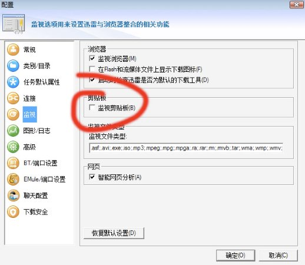

鉴于Windows系统的多方面价值，不少Mac用户会通过不同的途径取得Windows兼容环境，包括Boot
Camp、VM、Parallels、CrossOver等。
其中我比较喜欢得是Parallels，因为它在我的MacBook中性能表现最好。但是有不少用户反映Parallels的剪贴板共享不好使，其实是因为Parallels和迅雷的"监视剪贴板"功能有冲突，坚决办法其实也很简单，禁用迅雷的这个功能就可以了。
还有值得一提的是Parallels 4.0性能有了很大提升，在我的MB Core 2 Duo 2.4G 4G
RAM系统中虚拟Vista和BC运行基本没什么差别，唯一不同的是不能开启Areo UI。
